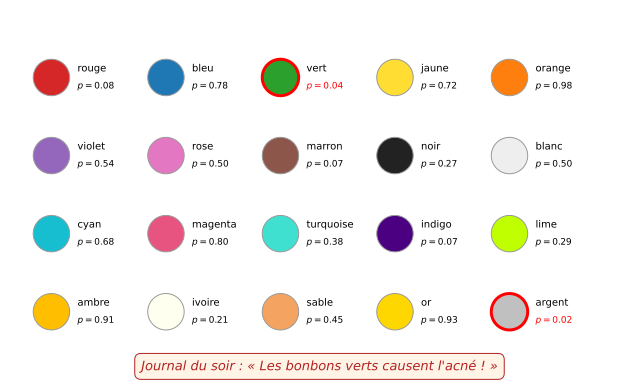
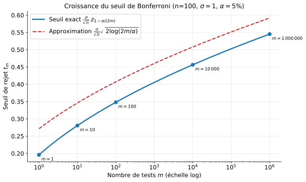
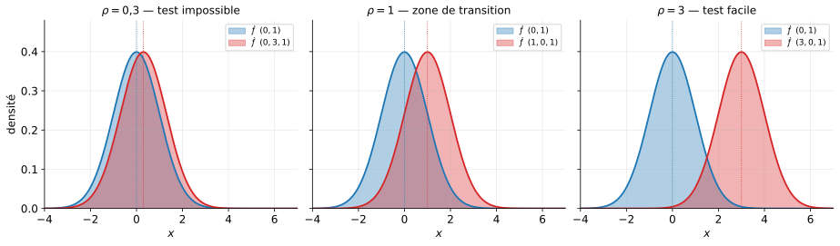
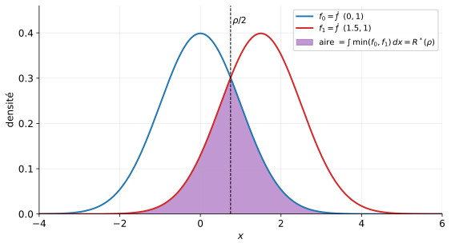

Un chercheur veut savoir si les bonbons causent de l’acné. Il fait un test :
p-valeur = 0.23 → pas significatif.
Il insiste et teste une par une 20 couleurs différentes :
Il publie : « Les bonbons verts causent de l’acné ! »
Warning
Problème : ce résultat n’a aucune valeur. En faisant 20 tests sous \(H_0\), trouver au moins une p-valeur \(< 0.05\) est presque certain.
Supposons que toutes les hypothèses nulles sont vraies et que les \(m\) tests sont indépendants. Chaque test rejette à tort avec probabilité \(\alpha = 5\%\).
Probabilité de rejeter au moins un test à tort :
\[\mathbb P(\text{au moins un rejet}) = 1 - (1 - \alpha)^m\]
| \(m\) | \(1 - (1-0{,}05)^m\) |
|---|---|
| \(1\) | \(0{,}05\) |
| \(5\) | \(0{,}23\) |
| \(10\) | \(0{,}40\) |
| \(20\) | \(0{,}64\) |
| \(100\) | \(0{,}994\) |

Plus on fait de tests, plus la plus petite p-valeur observée est artificiellement petite — même quand aucune hypothèse alternative n’est vraie.
Génomique : on teste \(m \approx 20\,000\) gènes pour voir lesquels sont associés à une maladie
A/B testing : on compare \(m\) variantes d’une page web pour décider laquelle maximise les ventes
Finance : on teste \(m\) stratégies de trading sur des données historiques (data snooping)
Warning
Dans tous ces cas, \(m\) est très grand et le contrôle des faux positifs par test individuel est totalement insuffisant.
On dispose de \(m\) échantillons indépendants. Pour chaque \(j \in \{1, \dots, m\}\) :
\(H_0^{(j)}: \mu_j = 0 \quad\) contre \(\quad H_1^{(j)}: \mu_j \neq 0\)
Chaque test produit une statistique \(\overline X^{(j)} = \frac{1}{n}\sum_i X_i^{(j)}\) et une p-valeur \(p_j\).
Pour contrôler le risque global, on introduit une nouvelle notion d’erreur.
Définition : FWER
Le Family-Wise Error Rate (erreur familiale) est la probabilité de rejeter au moins une hypothèse nulle vraie :
\[\text{FWER} = \mathbb P\!\left(\text{au moins un rejet à tort}\right)\]
Objectif : construire une procédure qui contrôle FWER \(\leq \alpha\) (typiquement \(\alpha = 5\%\)), quelles que soient les valeurs vraies \(\mu_1, \dots, \mu_m\).
Seuil individuel au niveau \(\alpha = 5\%\) sur chaque test :
on rejette \(H_0^{(j)}\) si \(|\overline X^{(j)}| > \dfrac{\sigma}{\sqrt n}\,z_{1-\alpha/2}\)
chaque test a une erreur de niveau \(\leq \alpha\)
Mais sous \(H_0\) globale, par indépendance :
\[\text{FWER} = 1 - (1 - \alpha)^m \xrightarrow[m \to \infty]{} 1\]
Warning
Le FWER explose avec \(m\) si on ne corrige pas le seuil.
Union bound (rappel de proba)
Pour des événements \(A_1, \dots, A_m\) quelconques (pas besoin d’indépendance !) :
\[\mathbb P\!\left(A_1 \cup A_2 \cup \dots \cup A_m\right) \leq \sum_{j=1}^m \mathbb P(A_j)\]
Preuve : récurrence à partir de \(\mathbb P(A \cup B) = \mathbb P(A) + \mathbb P(B) - \mathbb P(A \cap B) \leq \mathbb P(A) + \mathbb P(B)\).
Idée : si on fait en sorte que chaque \(\mathbb P(A_j)\) soit petit, alors la somme reste petite — et donc la probabilité de l’union aussi.
Appliquons l’union bound à \(A_j = \{\) le test \(j\) rejette à tort \(\}\).
Si chaque test individuel est au niveau \(\alpha/m\), alors
\[\text{FWER} \leq \sum_{j=1}^m \frac{\alpha}{m} = \alpha\]
Principe de Bonferroni
Pour contrôler le FWER au niveau \(\alpha\), on effectue chaque test individuel au niveau \(\alpha/m\).
En termes de p-valeurs : on rejette \(H_0^{(j)}\) si \(p_j \leq \alpha/m\).
Pour le test de la moyenne gaussienne, le seuil individuel au niveau \(\alpha\) est :
\(t_\alpha = \dfrac{\sigma}{\sqrt n}\,z_{1 - \alpha/2}\)
Un seul test (niveau \(\alpha\)) : \(t_1 = \dfrac{\sigma}{\sqrt n}\,z_{1 - \alpha/2}\)
\(m\) tests Bonferroni (niveau individuel \(\alpha/m\)) :
\(t_m = \dfrac{\sigma}{\sqrt n}\,z_{1 - \alpha/(2m)}\)
Garantie : FWER \(\leq \alpha\), quel que soit \(m\).
Pour \(\sigma = 1\), \(n = 100\), \(\alpha = 5\%\) :
| \(m\) | \(\alpha/(2m)\) | \(z_{1-\alpha/(2m)}\) | Seuil \(t_m\) |
|---|---|---|---|
| \(1\) | \(0{,}025\) | \(1{,}96\) | \(0{,}196\) |
| \(10\) | \(0{,}0025\) | \(2{,}81\) | \(0{,}281\) |
| \(100\) | \(2{,}5 \cdot 10^{-4}\) | \(3{,}48\) | \(0{,}348\) |
| \(1\,000\) | \(2{,}5 \cdot 10^{-5}\) | \(4{,}06\) | \(0{,}406\) |
| \(10^6\) | \(2{,}5 \cdot 10^{-8}\) | \(5{,}45\) | \(0{,}545\) |
Pour \(\alpha\) petit, le quantile gaussien admet l’approximation :
\(z_{1 - \alpha} \approx \sqrt{2 \log(1/\alpha)}\)
Intuition : la queue de \(\mathcal N(0,1)\) décroît comme \(e^{-t^2/2}\). Résoudre \(\mathbb P(Z > t) = \alpha\) revient à \(\log(1/\alpha) \approx t^2/2\), d’où \(t \approx \sqrt{2\log(1/\alpha)}\).
En injectant dans le seuil de Bonferroni :
\(t_m \approx \dfrac{\sigma}{\sqrt n}\,\sqrt{2 \log(2m/\alpha)}\)
On compare les seuils pour \(1\) et \(m\) tests :
| Seuil (approx.) | |
|---|---|
| \(1\) test | \(\dfrac{\sigma}{\sqrt n}\sqrt{2 \log(2/\alpha)}\) |
| \(m\) tests | \(\dfrac{\sigma}{\sqrt n}\sqrt{2 \log(2m/\alpha)}\) |
Observation clé
Passer de \(1\) à \(m\) tests revient à remplacer \(\log(2/\alpha)\) par \(\log(2m/\alpha)\).
Le nombre de tests \(m\) rentre sous un logarithme, puis sous une racine.

Lecture : passer de \(m = 1\) à \(m = 10^6\) tests n’augmente le seuil que d’un facteur \(\approx 2{,}8\) — c’est à peine plus exigeant.
Correction de Bonferroni
On a construit des tests, on sait calculer des seuils… mais sont-ils optimaux ?
Autrement dit : à \(n\) fixé, à partir de quelle valeur de \(|\mu|\) peut-on espérer détecter que \(\mu \neq 0\) ?
Le cadre minimax formalise cette question. Il demande :
Tous tests confondus, quelle est la plus petite séparation que l’on peut détecter de façon fiable ?
On considère un modèle paramétrique \((P_\theta)_{\theta \in \Theta}\) et deux sous-ensembles disjoints \(\Theta_0, \Theta_1 \subset \Theta\).
\(H_0: \theta \in \Theta_0 \quad\) contre \(\quad H_1: \theta \in \Theta_1\)
Les hypothèses sont composites en général : chacune regroupe une famille de lois.
Soit \(T: \mathcal X \to \{0,1\}\) un test. Comme \(H_0\) et \(H_1\) sont composites, on prend le pire des cas dans chaque hypothèse :
Risque du test
\[R(T) = \underbrace{\sup_{\theta \in \Theta_0} \mathbb P_\theta(T = 1)}_{\text{1ère espèce (pire cas)}} \; + \; \underbrace{\sup_{\theta \in \Theta_1} \mathbb P_\theta(T = 0)}_{\text{2nde espèce (pire cas)}}\]
Lecture : \(R(T)\) est la performance du test contre l’adversaire le plus défavorable — un \(\theta\) sous \(H_0\) qui maximise la proba de rejeter à tort, ou un \(\theta\) sous \(H_1\) qui la rend indétectable.
Définition : risque minimax
\[R^* = \inf_{T} R(T)\]
où l’infimum est pris sur tous les tests possibles.
C’est la performance du meilleur test contre le pire paramètre : min sur les tests, max sur \(\theta\) — d’où le nom minimax.
Question centrale : quand a-t-on \(R^*\) petit ? Autrement dit, quand peut-on espérer un test fiable ?
On se place dans le cas le plus simple possible : on observe une seule variable \(X \sim \mathcal N(\theta, 1)\), avec \(\Theta = \mathbb R\).
\(\Theta_0 = \{0\}, \quad \Theta_1 = \{\rho\}\)
Les deux hypothèses sont simples (chacune réduite à un point). Les \(\sup\) disparaissent :
\[R(T, \rho) = \mathbb P_{\theta=0}(T = 1) + \mathbb P_{\theta=\rho}(T = 0)\]
Remarque : observer \(n\) variables \(X_1, \dots, X_n \sim \mathcal N(\mu, \sigma^2)\) est équivalent à observer \(\overline X_n \sim \mathcal N(\mu, \sigma^2/n)\). L’analyse sur une seule gaussienne couvre donc le cas général — il suffira de lire \(\rho\) en unités de \(\sigma/\sqrt n\).

Considérons le test “naturel” :
\[T(X) = \mathbf 1\{X > \rho/2\}\]
Erreur de 1ère espèce (sous \(\theta = 0\)) :
\(\mathbb P_{\theta = 0}(X > \rho/2) = 1 - \Phi(\rho/2)\)
Erreur de 2nde espèce (sous \(\theta = \rho\)) : par symétrie,
\(\mathbb P_{\theta = \rho}(X \leq \rho/2) = \mathbb P(X - \rho \leq -\rho/2) = 1 - \Phi(\rho/2)\)
Conclusion :
\(R^*(\rho) \leq R(T, \rho) = 2\,(1 - \Phi(\rho/2))\)
La fonction \(1 - \Phi(\rho/2)\) décroît très vite :
| \(\rho\) | \(R(T, \rho)\) |
|---|---|
| \(0{,}5\) | \(\approx 1{,}60\) (trivial) |
| \(1\) | \(\approx 1{,}22\) |
| \(2\) | \(\approx 0{,}62\) |
| \(3\) | \(\approx 0{,}27\) |
| \(4\) | \(\approx 0{,}046\) |
| \(6\) | \(\approx 0{,}0027\) |
En lisant \(\rho\) comme \(\sqrt n\,\mu/\sigma\) (passage d’une seule gaussienne à la moyenne de \(n\) observations) :
Note
Le test de la moyenne peut détecter un signal \(\mu \neq 0\) dès que
\[|\mu| \gtrsim \dfrac{\sigma}{\sqrt n}\]
Est-ce optimal ? Peut-on faire mieux avec un autre test ?
Notons \(f_0, f_1\) les densités de \(\mathcal N(0,1)\) et \(\mathcal N(\rho, 1)\). Pour tout test \(T\) :
\[R(T, \rho) = \int T\,f_0 + \int (1 - T)\,f_1 \;\geq\; \int \min(f_0, f_1)\,dx\]
\[R^*(\rho) \geq \int \min(f_0, f_1)\,dx\]
C’est l’aire sous le minimum des deux densités — l’aire de recouvrement.

Par symétrie autour de \(\rho/2\) :
\(R^*(\rho) = 2\,\mathbb P_{\theta = 0}(X \geq \rho/2) = 2\bigl(1 - \Phi(\rho/2)\bigr)\)
C’est exactement le risque atteint par le test \(T^*(X) = \mathbf 1\{X \geq \rho/2\}\) — il est donc optimal.
On a obtenu la valeur exacte du risque minimax :
Pour le test de \(\mathcal N(0,1)\) contre \(\mathcal N(\rho, 1)\) : \[R^*(\rho) = 2\bigl(1 - \Phi(\rho/2)\bigr)\]
et donc \(\rho^*_{\min} \asymp 1\).
Traduction pour \(X_1, \dots, X_n\) i.i.d. \(\mathcal N(\mu, \sigma^2)\) :
\[|\mu|^*_{\min} \asymp \dfrac{\sigma}{\sqrt n}\]
C’est exactement la vitesse donnée par le TCL… mais ici on a en plus la garantie qu’aucun test ne peut faire mieux. Le \(1/\sqrt n\) est intrinsèque au problème.
Les deux messages
Partie I — Tests multiples : passer de \(1\) à \(m\) tests ne coûte qu’un facteur \(\sqrt{\log m}\) dans le seuil. Bonferroni (via l’union bound) est simple et efficace.
Partie II — Minimax : le seuil de détection en \(\sigma/\sqrt n\) d’un test de moyenne n’est pas arbitraire. C’est la vitesse optimale : aucun test ne peut détecter un signal plus petit.
Les seuils que vous avez appris dans ce cours ne sont pas des choix techniques arbitraires — ce sont les bonnes vitesses.